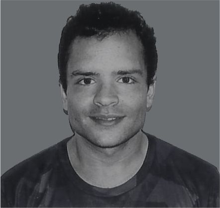
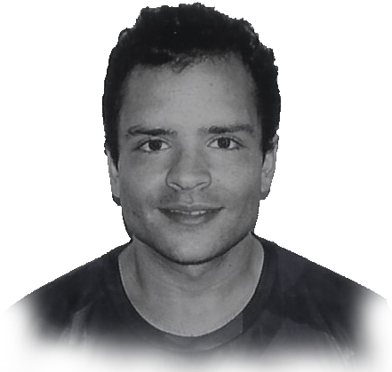

Educación: Mi viaje académico comenzó en el año 2015 cuando ingresé a la Universidad. Estudié Arquitectura en la prestigiosa Facultad de Arquitectura, Diseño y Urbanismo de la Universidad Nacional del Litoral. Con dedicación y esfuerzo, me gradué el 28 de julio del 2022, llevando con orgullo el título que tanto anhelaba. Luego, el 8 de agosto del 2022, inicié un posgrado de Especialización en Pericias y Tasaciones en el mismo ámbito educativo, realizando algunos de sus módulos.
Intereses Profesionales: Actualmente, me encuentro inmerso en el emocionante mundo del Modelado BIM arquitectónico con Revit. Estoy en constante investigación y experimentación, realizando prácticas y cursos en diversas plataformas virtuales para mejorar mis habilidades y mantenerme al tanto de las últimas tendencias en la industria.
Otros Conocimientos: Además de mi pasión por la arquitectura, también he incursionado en el mundo de la programación como desarrollador Python. He adquirido conocimientos a través de diversos cursos y proyectos, como la creación de esta página web "Mi Portfolio". A su vez, he adquirido conocimientos en otros lenguajes tales como HTML, CSS, Java y Javascript.
Intereses Personales: En mi tiempo libre, me gusta mantener un equilibrio entre cuerpo y mente. Disfruto yendo al gimnasio para mantenerme en forma y saludable. También me encanta salir a correr al aire libre, donde encuentro la paz y la libertad para desconectar del mundo. La música es otra de mis grandes pasiones; disfruto explorando diferentes géneros y artistas, y siempre estoy buscando nuevas melodías que me inspiren.
En resumen, soy un individuo apasionado y dedicado, comprometido con el aprendizaje continuo y el crecimiento personal tanto en el ámbito profesional como en el personal.
Estoy emocionado por las oportunidades que el futuro me depara y estoy ansioso por seguir creciendo y aprendiendo en este emocionante viaje llamado vida.
